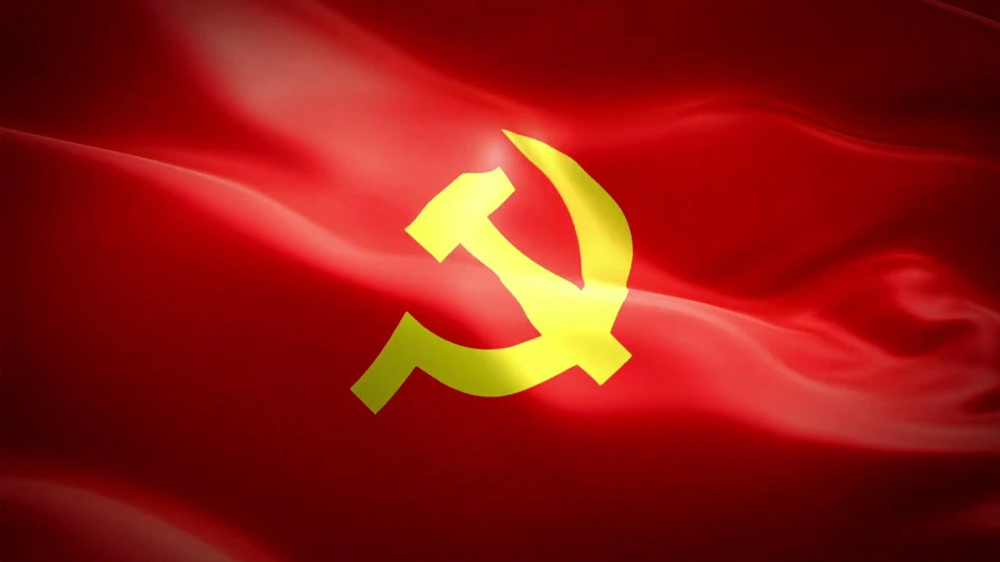

Nội dung thảo luận 2
Quan điểm của Đảng trong chiến tranh nhân dân bảo vệ Tổ Quốc.
- Quan điểm chiến tranh toàn dân.
- Quan điểm chiến tranh toàn diện.
- Quan điểm chuẩn bị mọi mặt để đánh địch lâu dài.
- Quan điểm kết hợp kháng chiến với xây dựng.
- Quan điểm kết hợp đấu tranh quân sự với chính trị.
- Quan điểm kết hợp sức mạnh dân tộc với thời đại.
- Tại sao phải tiến hành chiến tranh nhân dân, toàn dân toàn diện?
- Câu hỏi.